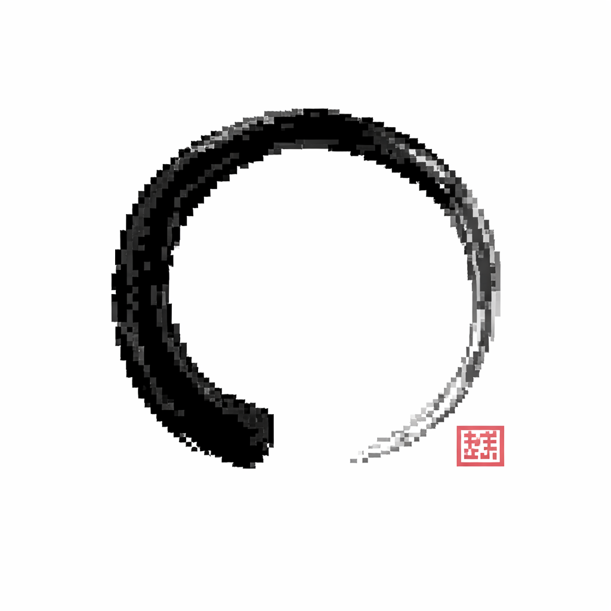

Has entrado en un vacío de red. El oráculo respira contigo en el presente, pero no logramos conectar con el servidor.
Si ya has visitado el oráculo hoy, tus sabidurías guardadas y las reflexiones principales siguen estando accesibles sin conexión.